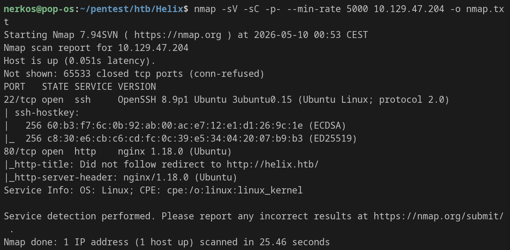
on voit que 2 ports ouvert, le port 22 et le port 80 (http)
Je modifie mon fichier /etc/hosts, pour pourvoir aller sur le site
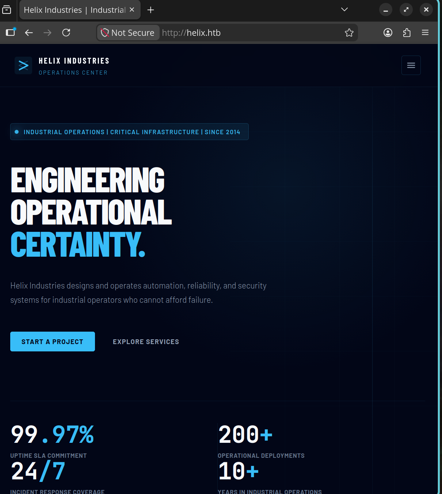
Aucune réponse concluante avec ffuze pour rechercher les sous domaines :
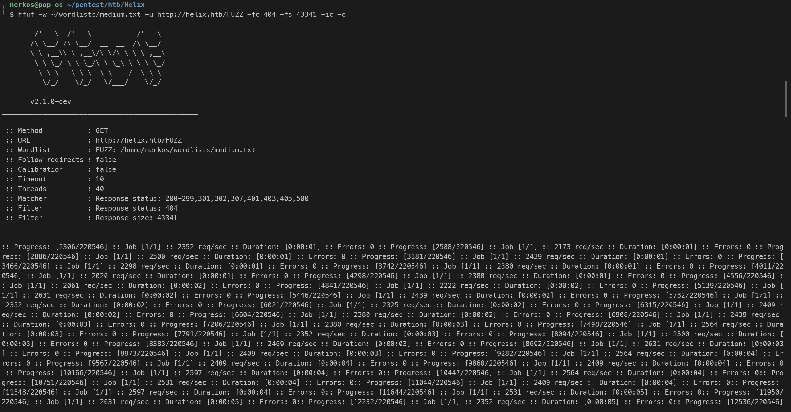
pour cette capture on a utilisé cette commande :
"ffuf -w ~/wordlists/medium.txt -u http://helix.htb/FUZZ -fc 404 -fs 43341 -ic -c" (ignorer les 404 et tous les sous domaines qui font 4331 octets car les faux positifs me raménent sur la page d'acceuil qui fait cette taille), avec cette commande j'ai fais du Directory fuzzing (/FUZZ) chercher des chemins sur le serveur
et juste après j'ai essayé cette commande "ffuf -w ~/wordlists/medium.txt -u http://helix.htb/ -H "Host: FUZZ.helix.htb" -ac -c", avec cette commande j'ai fais du VHost fuzzing (FUZZ.helix.htb) chercher des identités sur le même serveur
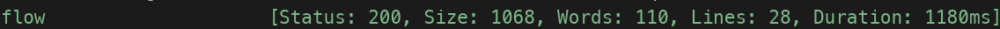
Quand j'ai essayé d'aller sur ce lien flow.helix.htb j'ai été redirigée sur cette page :
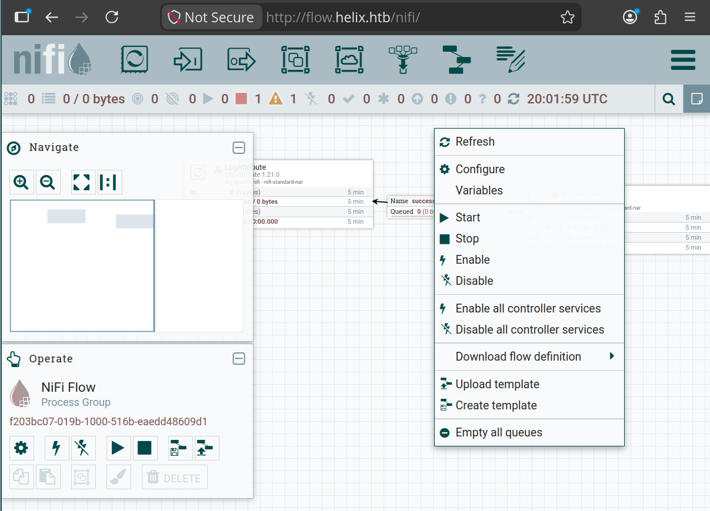
Nifi permet de crée des processus qui manipulent des fichiers, exécutent des scripts ou gérent des données.
En naviguant sur le site j'ai trouvé la version de Nifi :
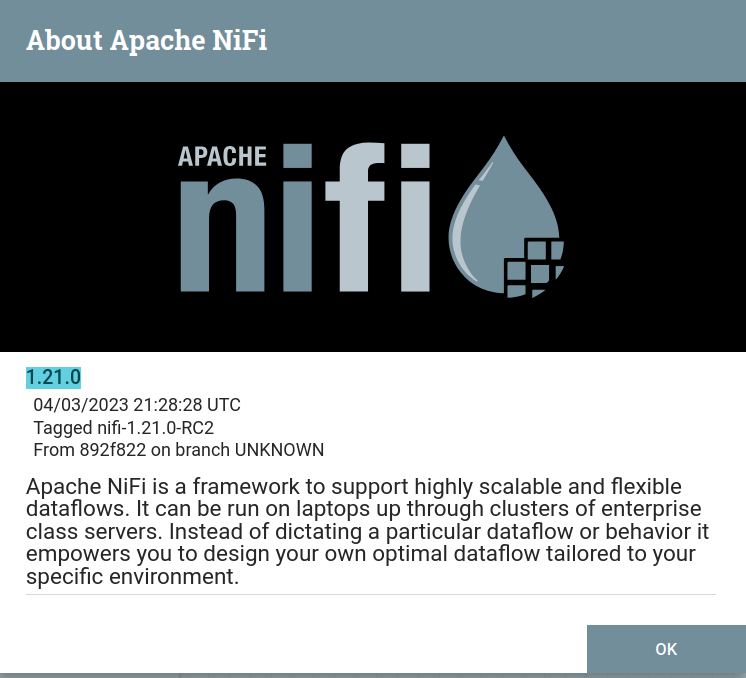
j'ai trouvé une CVE (CVE-2023-34468) décrit sur le site du NIST :
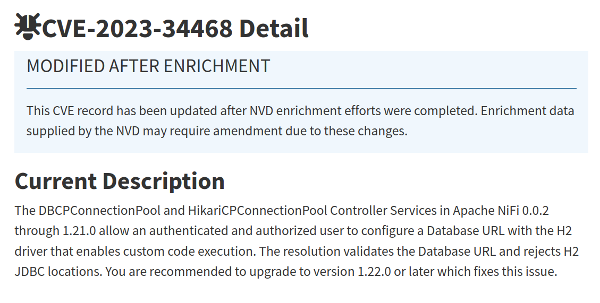
Un poc qui exploite cette cve :
https://github.com/Al3xx-sec/CVE-2023-34468-POC/tree/main
Ce poc exploite une instance NiFi via une injection dans les services de connexion aux bases de données (DBCPConnectionPool).
chaîne d'attaque du poc :
1- Création d'un connecteur avec un driver H2.
2- Utilisation de RUNSCRIPT FROM pour forcer NiFi à télécharger un script SQL malveillant sur ma machine.
3- Le script SQL définit un ALIAS Java qui exécute des commandes système (RCE).
4- Déclenchement via un processeur ExecuteSQL pour obtenir le Reverse Shell.
je clone le repot :
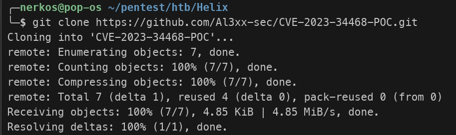
je pars dans le repot que je viens de cloner :
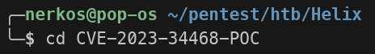
je lance le script :
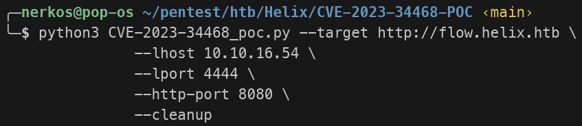
sur mon port d'écoute :
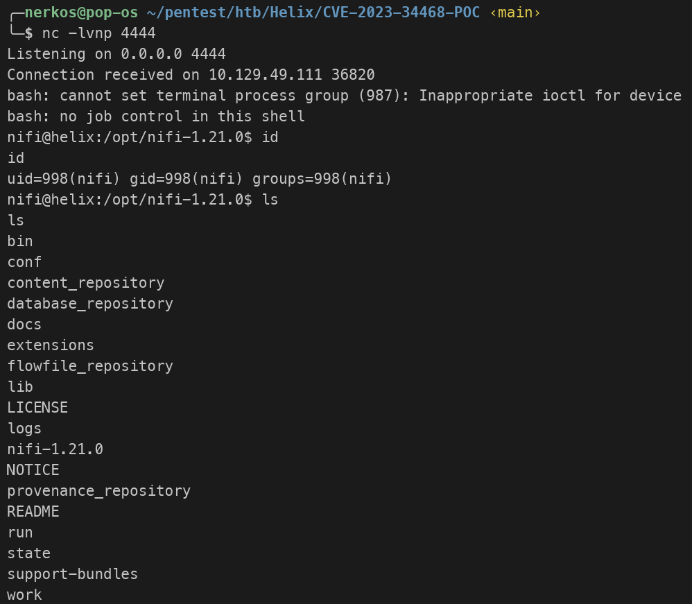
je suis partis dans le dossier conf et j'ai fait cette commande pour chercher si y a des mot de passe stockés ou non
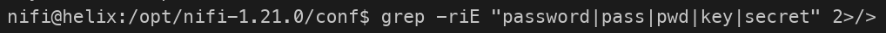
-r : (recursive) pour chercher dans les dossiers et sous dossiers
-i : (Ignore Case), il s'en fiche des majuscules et minuscules
-E : (Extended Regex), permettre l'utilisation du symbole '|'
-2>/dev/null : (j'ai bien tapé ça, problème avec bash), masqué les erreurs
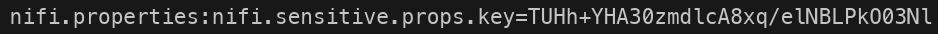
la seul ligne intéressante du résultat, cette clé va nous servir de déchiffrer les mdp si on en trouve un
dans /opt on trouve 2 utilisateurs mais je ne peux aller dans le répertoires de l'utilisateur Helix, et j'ai regardé ce répertoire appartient au groupe helixsvc
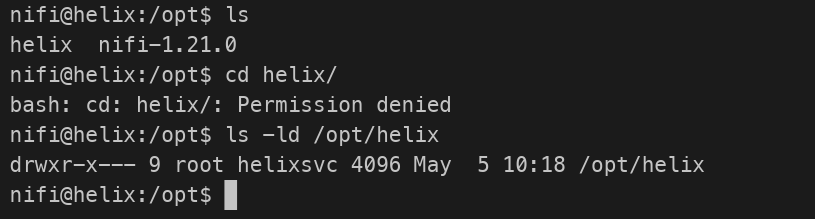
-l :(Long) : Affiche le format détaillé (permissions, propriétaires, taille, date).
-d :(Directory): Indique à
ls de nous montrer les infos du dossier lui-même (/opt/helix), et non pas de lister les fichiers qui sont à l'intérieur. donc d'après le résultat root a le droit de tout faire faire et le groupe helixsvc a le droit de lire et d'entrer dans ce dossier
je suis parti dans le répertoire /home mais je vois qu'un seul utilisateur operator et je ne peux pas accéder a son répertoire
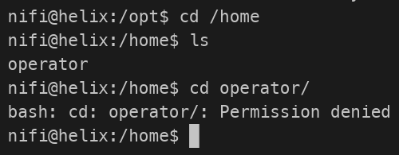
plus d'informations sur l'utilisateur operator :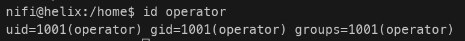
je reviens dans le dossier conf et j'ouvre un serveur pour récupérer le fichier flow.xml.gz
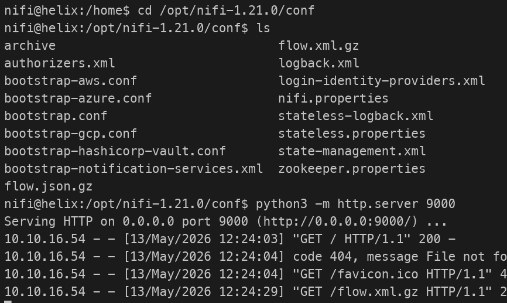
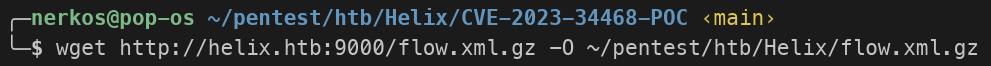
le fichier est bien dans mon répertoire :
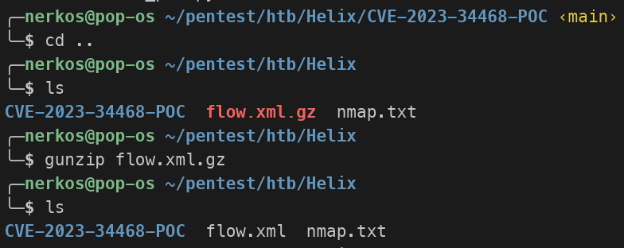
dans ce fichier j'ai trouvé le password d'operator chiffré :
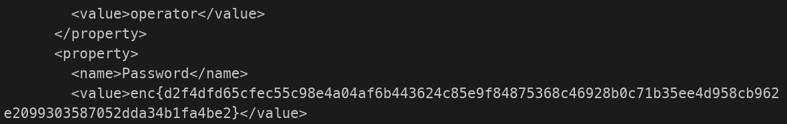
En naviguant dans la session de nifi j'ai trouvé ce fichier :
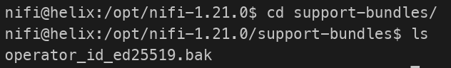
le contenu du fichier :
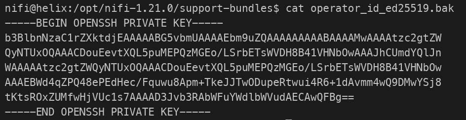
j'ai créé un fichier dans sur ma session pour copier la clé privé open ssh :
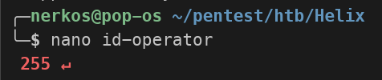
j'ai mis la clé privé lisible juste par moi pour que ssh l'accepte :
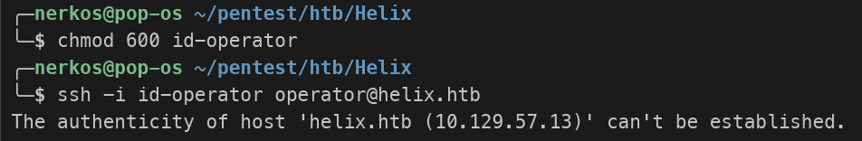
donc j'ai pu copier le flag user :
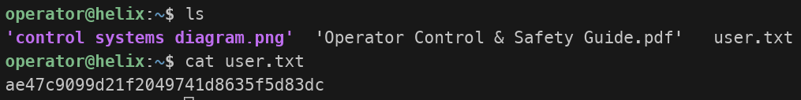
vérification si j'ai des droits particulier :
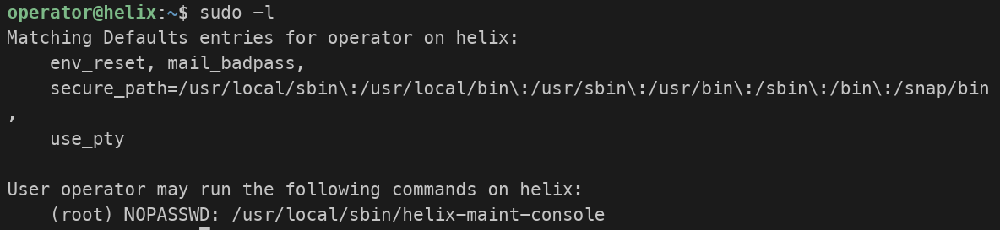
j'ai les droit en tant que root d'exécuter ce binaire donc sudo sans mdp
j'ai ouvert un serveur dans la session d'operator :
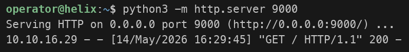
je suis partie sur ce serveur pour récupérer les fichiers qui sont dans le répertoire personnel :
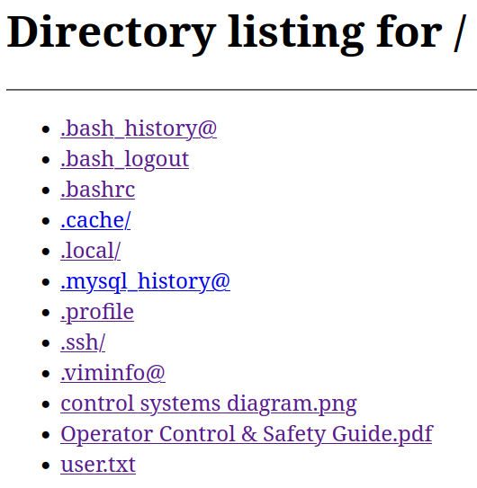
le png :
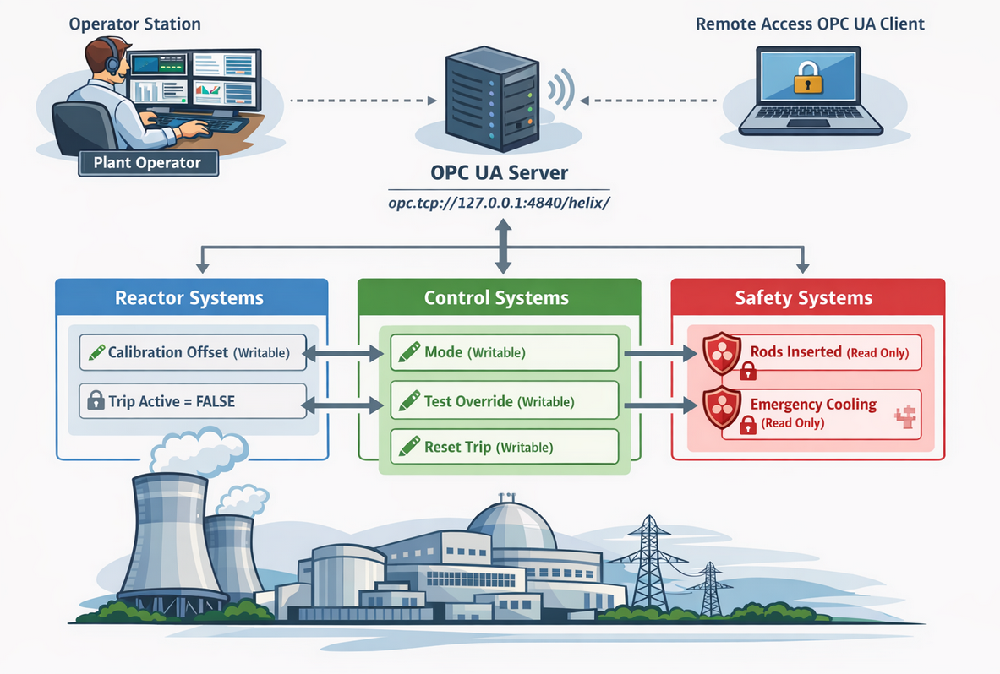
le pdf :
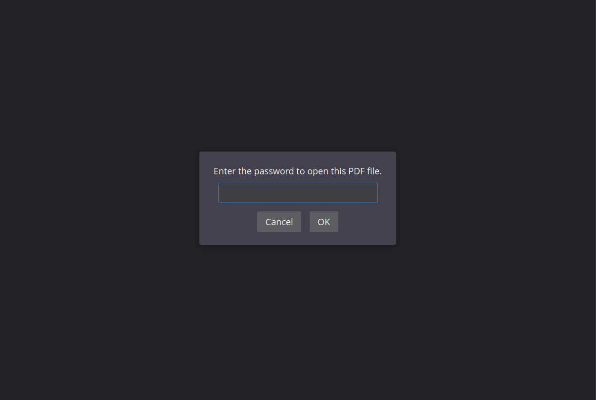
je vais essayer de cracker le mdp avec john :
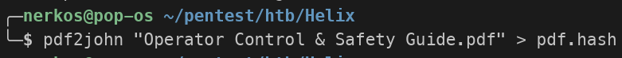
je récupère le hash du fichier pour le cracker avec john
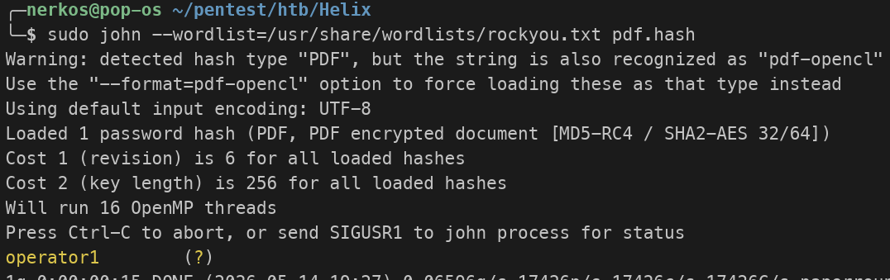
le mdp du pdf est operator1
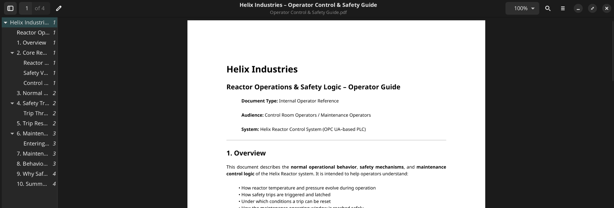
ce document nous explique concrétement comment débloquer l'acccés root
quand j'ai ouvert le serveur http j'ai aussi trouvé ces fichiers dans le répertoires ssh :
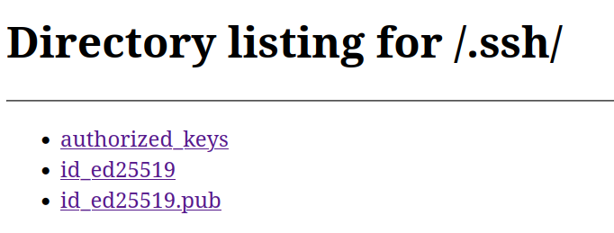
après m'être bloqué longtemps sur ce challenge j'ai relu le png et le pdf, et j'ai cherché sur internet :
OPC UA CLIENT et j'ai trouvé ce repot github qui te montre comment installer l'outil : https://github.com/FreeOpcUa/opcua-client-gui
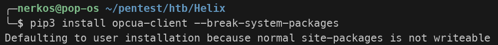
je le lance :
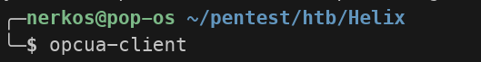
j'ai eu ça après l'avoir lancé
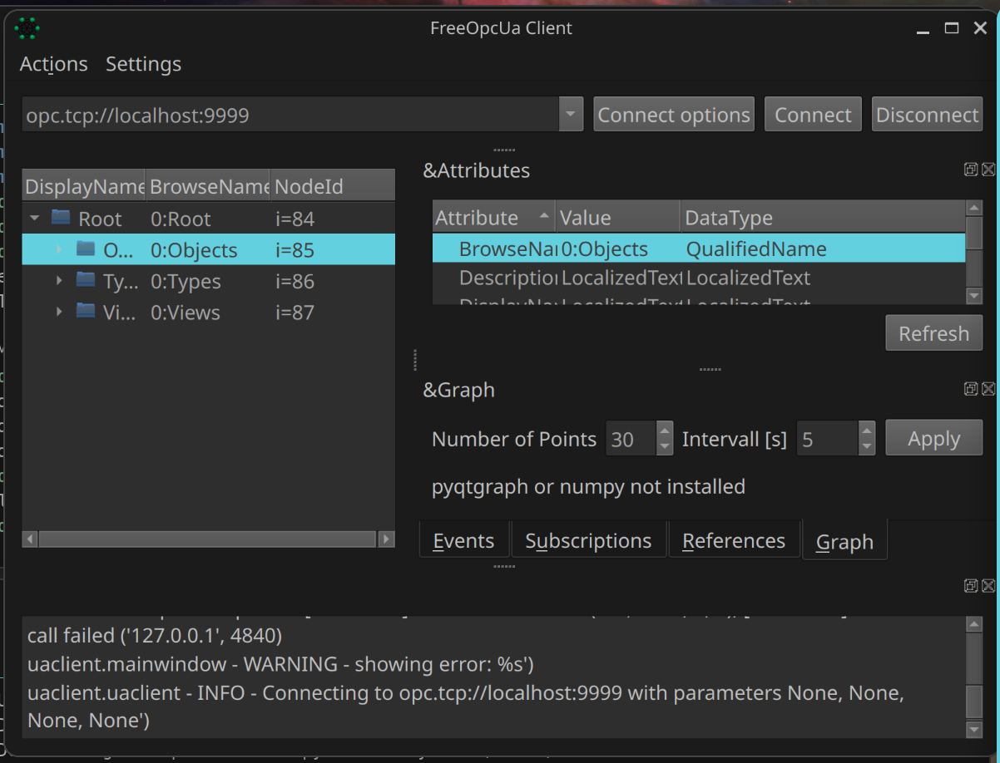
entre temps j'ai lancé cette commande :
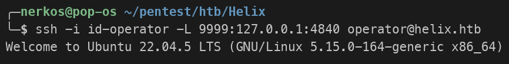
pour faire un rebond et avoir ce que operator a en local sur son port 4840 moi je vais l'avoir en local sur mon port 9999
Tous les ports ouvert dans la session d'operator :
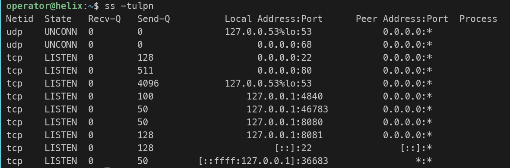
contrôle du port 8080 :
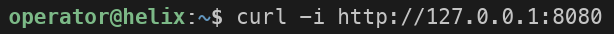
mais c'est juste le port qui héberge l'instance locale d'Apache NIFI
contrôle du port 8081 :
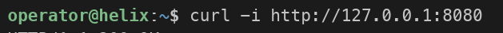
c'est une redirection :
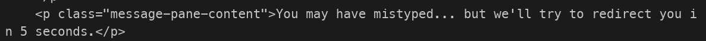
vérification de le redirection :
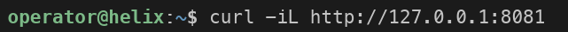
-L : pour suivre la redirection
dans le résultat de la commande on voit que c'est le panel du réacteur :
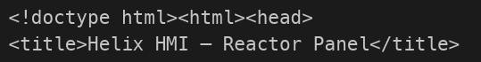
j'exécute un rebond sur sont port 8081 pur que je puisse le voir sur ma session :
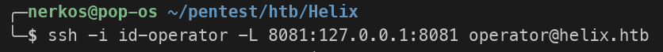
c'est bien le panel du réacteur :
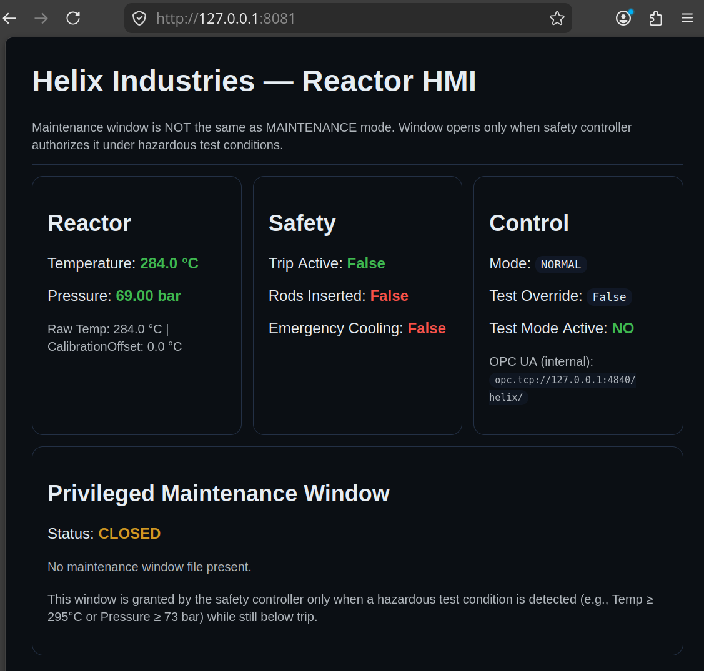
on ne peut pas modifier les attributs dans opcua-client donc j'ai trouvé ce repot github pour pouvoir modifier les attributs et passer en root :
le attributs que je dois modifié (trouvé dans le pdf)
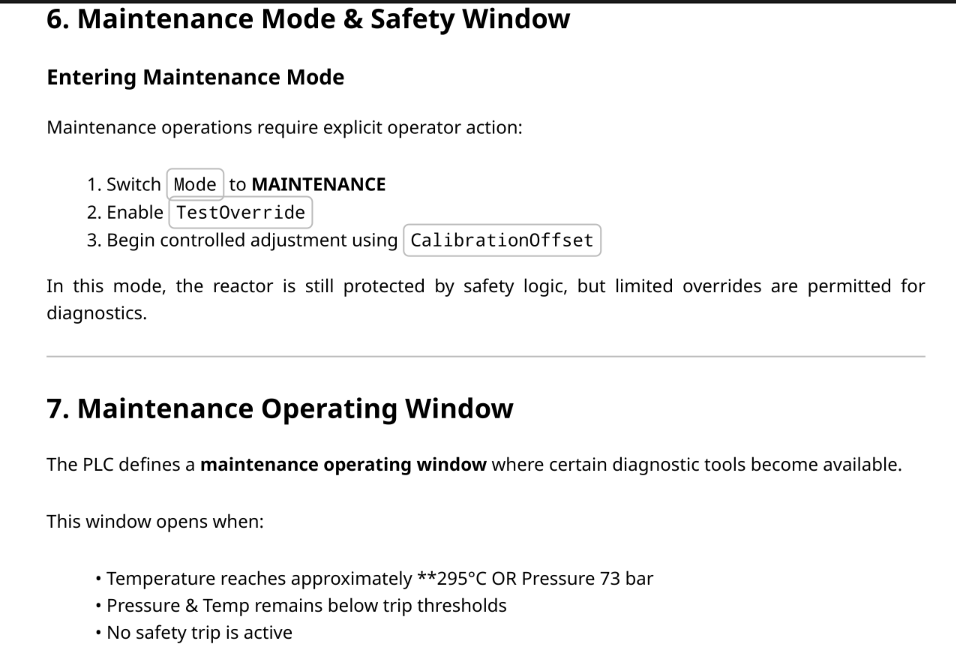
le repot : https://github.com/node-opcua/opcua-commander
j'ai suivis les étapes from npm pour l'installation et l'exécution du script :
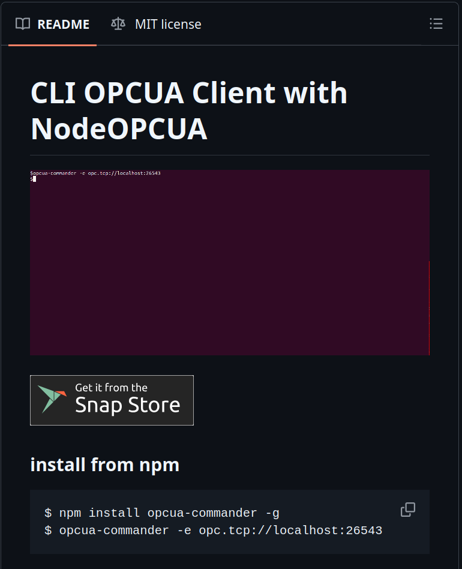
j'ai modifié la commande pour correspondre au port ou j'ai mis le rebond:
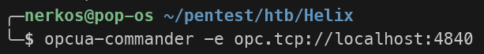
après le lance de opcua-commander j'ai du modifier les attributs :
mettre le mode en maintenance :
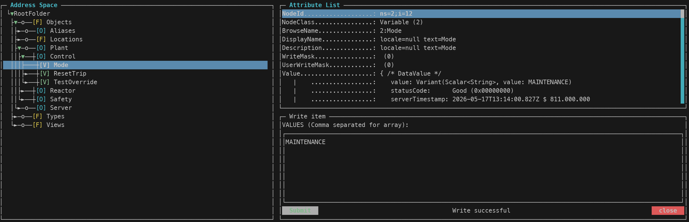
true pour le TestOverride (il était en false donc = 0)
la température était de 283.9 donc j'ai rajouté 11.5 pour dépasser les 295°C :
j'ai pu exécuter cette commande que le utilisateur operator peut exécuter en tant que sans taper le mdp de root :
(le résultat de la même commande avant la modfication des attributs :)
j'étais bien dans la session du root donc il me restait juste a récup le flag :